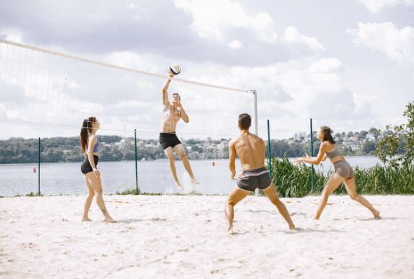
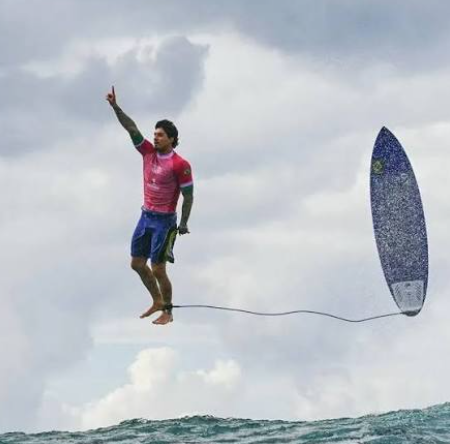

Esportes de verão são atividades físicas que são praticadas principalmente durante o período mais quente do ano, aproveitando o clima favorável para a prática de esportes ao ar livre, objetivo desse site é para que os visitantes possam descobrir mais sobre esses esportes e suas vantagens para a saúde.
Principais esportes de verão
Vôlei de Praia

Exemplo de imagem do esporte vôlei, pessoas felizes jogando vôlei de praia.
As regras do vôlei de praia são semelhantes ao vôlei em quadra, mas são jogadas em uma quadra de areia junto ao mar. Ela é jogada por duas equipes de três jogadores cada, separadas por uma rede. Igualmente ao vôlei em quadra, a sua diferença está só direito em jogadores. Seu beneficio é o fortalecimento dos músculos e a melhoria da coordenação motora, além de que proporciona uma excelente queima de calorias.
Surf

Exemplo de imagem do esporte surf Gabriel Medina.
Quem nunca sonhou em deslizar sobre uma onda? O surf é um esporte que combina graça, equilíbrio e força, sendo praticado em praias ao redor do mundo, existem vários beneficios no surf dentre eles temos a melhoria da resistência física e a redução do estresse, todo mundo ama a junção de mar e areia.O surfe é um esporte radical praticado no mar que consiste em deslizar sobre as ondas em pé, utilizando uma prancha. Exige equilíbrio, técnica e coragem, sendo também considerado um estilo de vida que promove o contato direto com a natureza e a busca pelo bem-estar.
Curiosidades extras:
Existem vários fatos interessantes sobre os esportes de verão. Por exemplo, o vôlei de praia foi incluído nos Jogos Olímpicos em 1996. Já o surf tem uma história rica e envolve a interação com as ondas do oceano, Além de ter sido colocado como esporte olímpico em 2021.